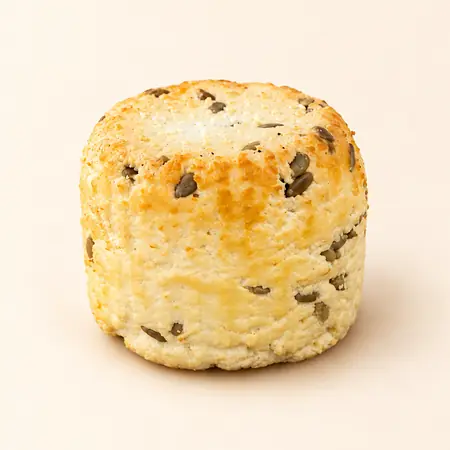
Chudobski ser wędzony ze słonecznikiem
Wędzony tradycyjnie, z chrupiącymi ziarnami słonecznika
39,00 zł300-320 g
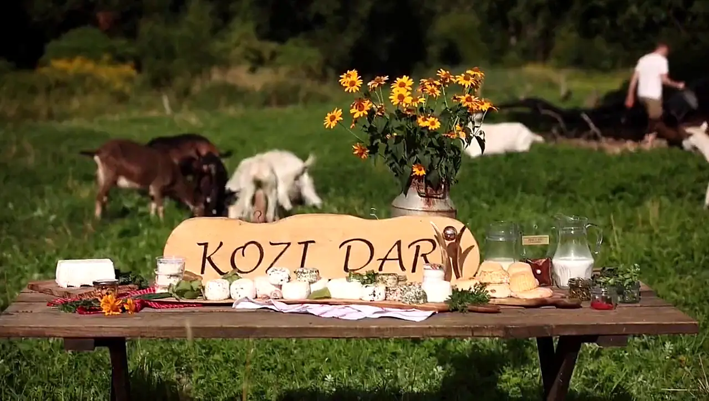
Rodzinne gospodarstwo pod Opolem. Sery, jogurty i kefir z mleka naszych kóz, robione ręcznie, w małych partiach.
Zobacz seryWysyłka chłodzona, darmowa od 400 zł
Wszystko z mleka naszych kóz: sery podpuszczkowe i wędzone, ricotta, twaróg, mleko, kefir i jogurt. Ceny brutto.

Wędzony tradycyjnie, z chrupiącymi ziarnami słonecznika
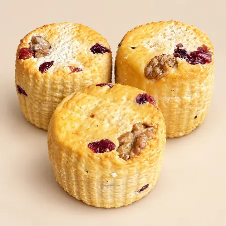
Orzechy włoskie i słodka nuta żurawiny
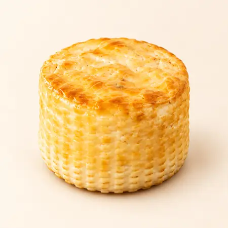
Mleczny, lekko słony, można go grillować
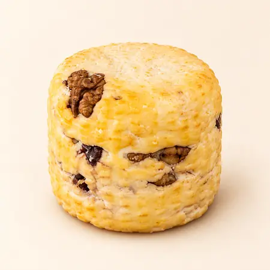
Kawałki orzechów w każdym plastrze, dobry z miodem i gruszką
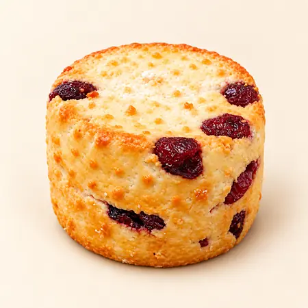
Dym, sól i owocowa słodycz, ładny na deskę serów
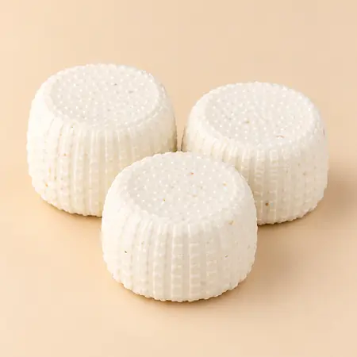
Delikatny i puszysty, nasalany solą kamienną z Kłodawy
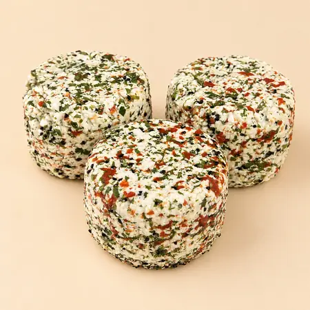
Suszone pomidory, czosnek niedźwiedzi i czarnuszka
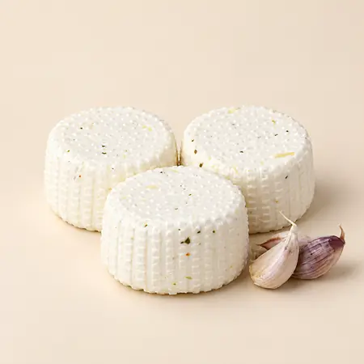
Z niepasteryzowanego mleka, miękki i delikatny
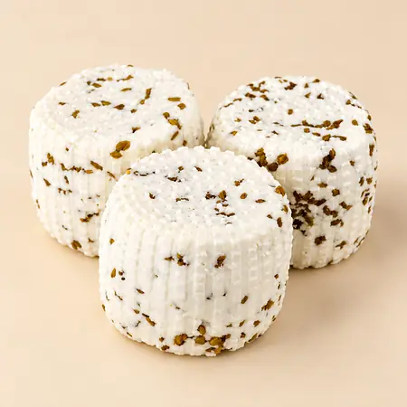
Z wyraźnym posmakiem kozieradki
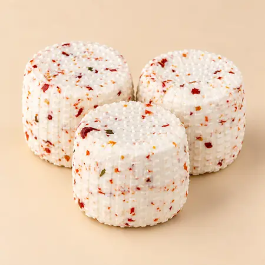
Mięciutki, z niepasteryzowanego mleka
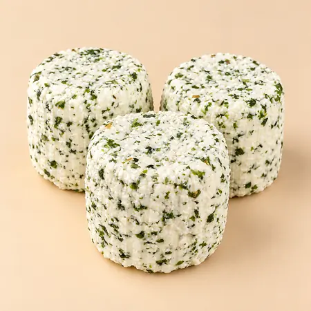
Ręcznie nasalany solą kamienną
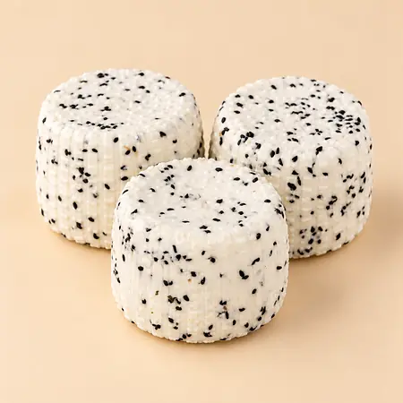
Z niepasteryzowanego mleka koziego
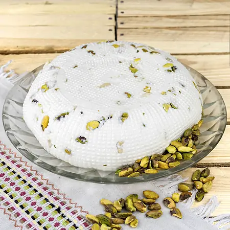
Aromatyczne pistacje i chrupiące nerkowce
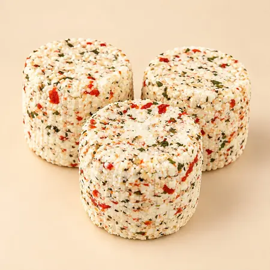
Bez konserwantów, z wyrazistymi ziołami
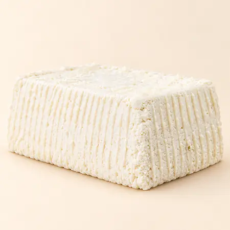
Lekko słodka, bardzo delikatna i puszysta
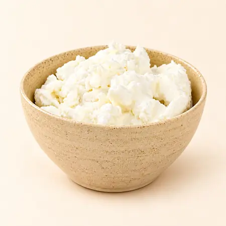
Puszysty, kremowy, z lekko kwaśnym aromatem
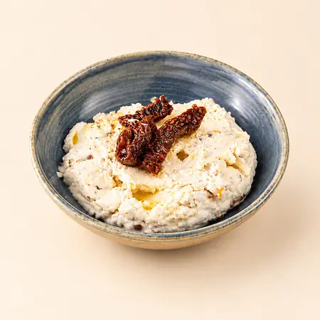
Z czosnkiem, pomidorami i kaparami
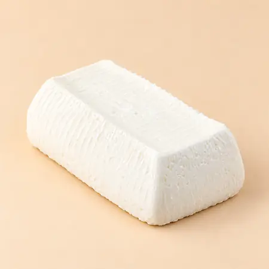
Zwarty, słonawy, do sałatek, zapiekanek i na grilla
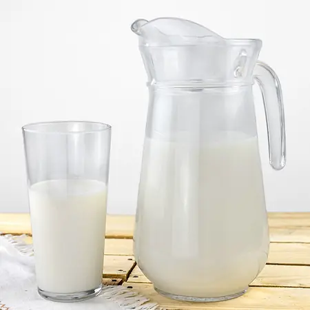
Słodkie i delikatne, do picia, kawy i wypieków
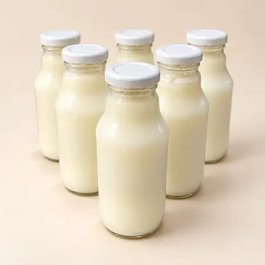
Orzeźwiający, lekko musujący i delikatnie kwaskowy
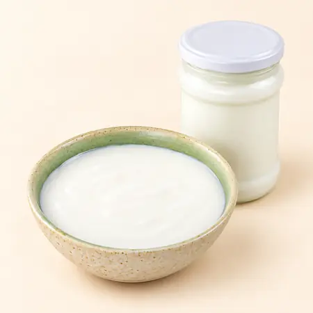
Śmietankowy, lekko kwaskowaty, bez dodatków
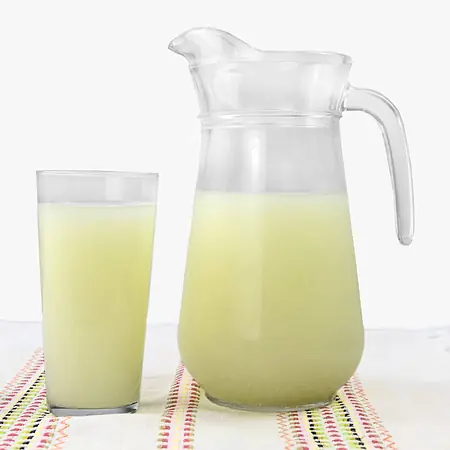
Lekko kwaskowata i orzeźwiająca
Sery 300-320 g, ricotta i twaróg także po 500 g, mleko także w butelce 1 l. Minimalne zamówienie 99 zł.
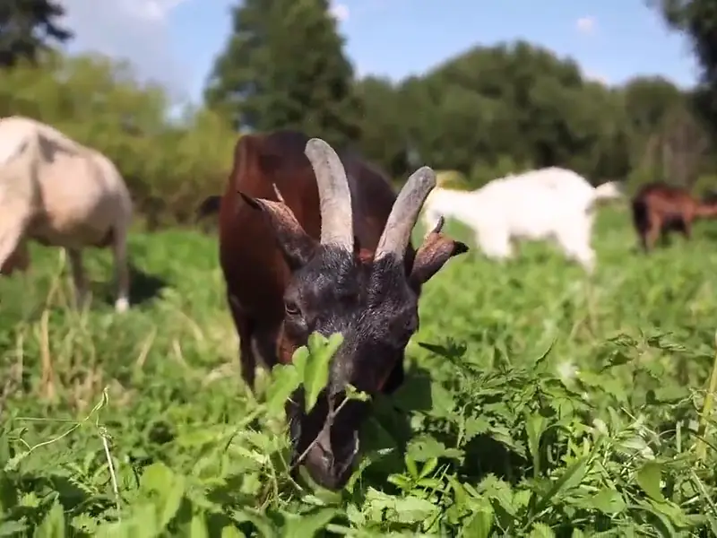
Większość naszych serów robimy z mleka niepasteryzowanego. Trafia do serowarni takie, jakie dały nasze kozy, dlatego ma pełniejszy smak, a każda partia smakuje odrobinę inaczej, zależnie od pory roku.
Produkty z mleka surowego nie są poddawane obróbce cieplnej. W ciąży, przy obniżonej odporności i dla małych dzieci prosimy o wcześniejszą konsultację z lekarzem.
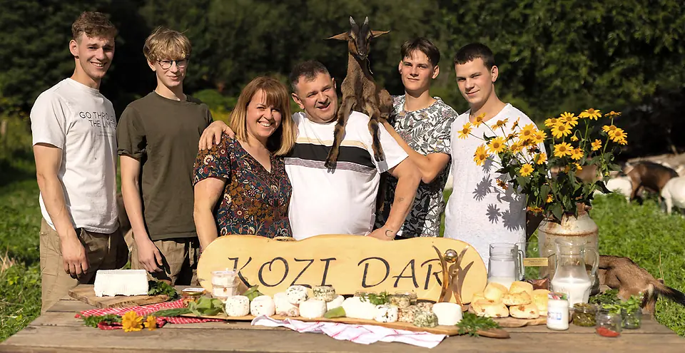
Gospodarstwo Kozi Dar powstało w maju 2015 roku. Pierwszą kozę przywiozła mama, Gosia, żeby jej czterej synowie pili naturalne mleko prosto z gospodarstwa. Niedługo później tata, Romek, wrócił ze spotkania hodowców z planem: powiększyć stado i zacząć robić sery rzemieślnicze.
Dziś mamy ponad 200 kóz, a nazwa ma dla nas podwójne znaczenie. To dar dla naszej rodziny, bo jedna koza dała nam nowy początek, i dar dla Was: uczciwe produkty prosto od rolników.
Wyróżnienia: Perła 2021 w Poznaniu za najlepszy produkt oraz tytuł "Opolska Marka" za świeże sery podpuszczkowe.
Nasze sery, jogurty i mleko to produkty świeże, więc pakujemy je tak, żeby dotarły chłodne w każdy zakątek Polski.
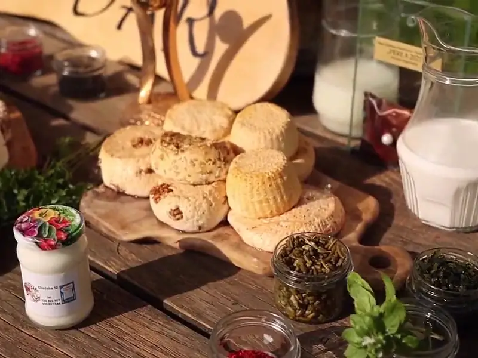
Chudoba 12, 46-275 Chudoba. Przed przyjazdem prosimy o telefon, przygotujemy zamówienie.
ul. Piłsudskiego 8, 46-200 Kluczbork
Pon.-pt. 9:00-16:00
Sprzedawca: Jakub Famuła, ul. Piłsudskiego 8, 46-200 Kluczbork
NIP 7511789541, REGON 527536764